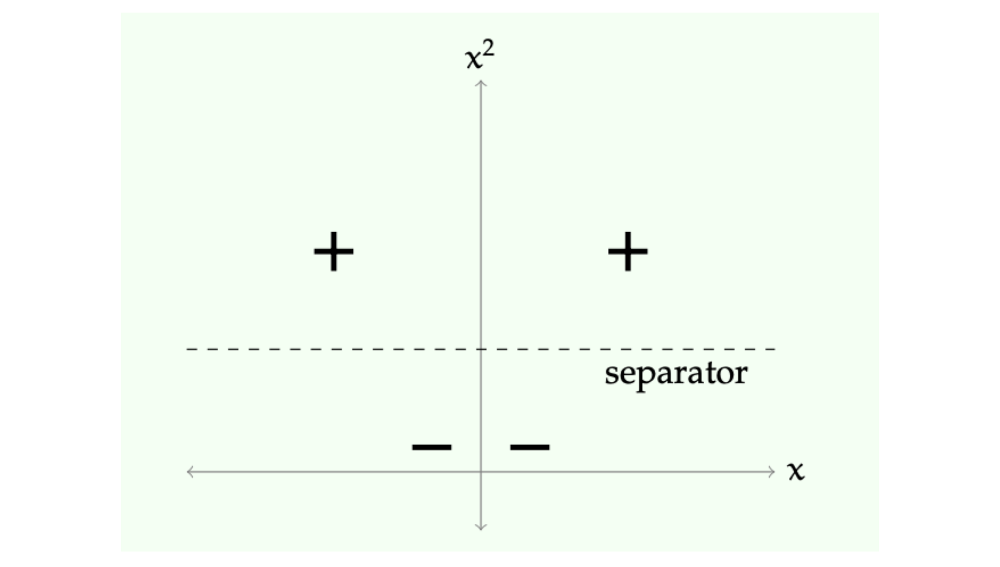
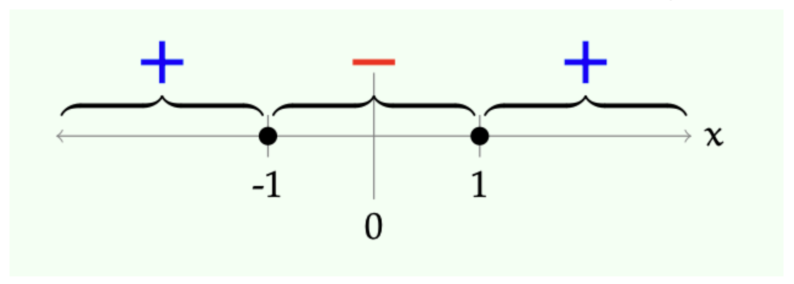
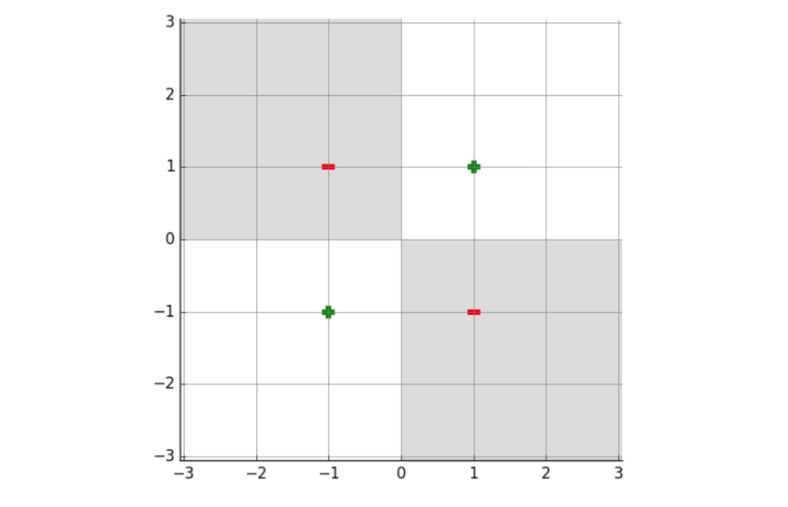

1. Introduction: 선형 분류기(Linear Classifiers)의 한계
기계학습 모델을 설계할 때, 선형 분류기(Linear Classifiers)는 분석과 최적화가 용이하다는 강력한 장점을 가집니다. 비용 함수가 볼록(Convex)하여 전역 최적해(Global Optimum)를 찾기 쉽고, 가중치(Weights)를 통해 각 특성(Feature)이 예측에 미치는 영향을 직관적으로 해석할 수 있기 때문입니다.
하지만 선형 분류기는 가설 공간(Hypothesis Class)이 매우 제한적이라는 치명적인 단점이 있습니다. 현실의 데이터는 단 하나의 선이나 초평면(Hyperplane)으로 완벽하게 나눌 수 없는 경우가 훨씬 많습니다.
따라서 우리는 다음과 같은 근본적인 질문을 던지게 됩니다. “선형 모델의 단순함과 계산적 이점을 유지하면서도, 비선형적인 데이터 패턴을 학습할 수 있는 더 나은 방법은 없을까?”
이 포스트에서는 특성 표현(Feature Representation)과 공간 변환을 통해 선형 모델이 비선형 문제를 해결할 수 있도록 돕는 기법들, 그리고 다양한 형태의 데이터(범주형, 텍스트 등)를 기계학습 모델이 이해할 수 있도록 인코딩하는 전략에 대해 깊이 있게 다룹니다.
2. 비선형 변환의 직관: XOR 문제 (XOR Problem)
선형 분류기의 한계를 보여주는 가장 대표적이고 고전적인 예시는 XOR (Exclusive OR) 데이터셋입니다.
2.1. 차원에서의 선형 분리 불가능성
우선 이해를 돕기 위해 2차원이 아닌 1차원 공간에서의 단순화된 데이터셋을 가정해 보겠습니다. 1차원 축(\(x\)) 위에 다음과 같이 세 개의 데이터 포인트가 존재한다고 가정해 봅시다.
- 양성 클래스(\(+\)): \(x = -1\), \(x = 1\)
- 음성 클래스(\(-\)): \(x = 0\)
1차원 공간에서 선형 결정 경계는 단 하나의 ’점’입니다. 하나의 점을 찍어서 좌우로 양성(\(+\))과 음성(\(-\))을 완벽히 나눌 수 있을까요? 불가능합니다. 양성 클래스가 음성 클래스의 양옆을 둘러싸고 있기 때문입니다.
2.2. 고차원 공간으로의 매핑 (Mapping to Higher Dimensions)
이 문제를 해결하기 위한 핵심 아이디어(Trick)는 비선형 변환(Non-linear Transformation)을 통해 데이터를 기존보다 차원이 높은 공간으로 이동시키는 것입니다.
변환 함수 \(\phi(x)\)를 다음과 같이 정의해 봅시다. \[\phi(x) = [x, x^2]\]
이 변환은 1차원의 데이터 포인트 \(x\)를 2차원 공간 \((x, x^2)\)로 투영합니다. 데이터를 이 새로운 공간으로 이동시키면 어떤 일이 발생할까요?
- 기존 양성 데이터 \(x = -1 \implies \phi(-1) = [-1, 1]\)
- 기존 양성 데이터 \(x = 1 \implies \phi(1) = [1, 1]\)
- 기존 음성 데이터 \(x = 0 \implies \phi(0) = [0, 0]\)
새로운 2차원 공간에서는 음성 데이터가 원점 근처에 위치하고, 양성 데이터들은 \(y\)축 방향으로 위로 솟아오르게 됩니다.

이제 우리는 이 새로운 공간에서 데이터를 분리할 수 있는 선형 결정 경계(Linear Separator)를 쉽게 찾을 수 있습니다. 예를 들어, 수평선 형태의 분리선을 다음과 같이 정의할 수 있습니다. \[x^2 - 1 > 0\]
즉, \(x^2 - 1 = 0\)을 기준으로, 이 값보다 크면 양성(\(+\)), 작으면 음성(\(-\))으로 분류하는 선형 모델입니다.
2.3. 원래 공간에서의 해석
고차원(\(\phi(x)\) 공간)에서 찾은 선형 결정 경계 \(x^2 - 1 = 0\)은, 원래의 1차원(\(x\)) 공간에서는 어떤 형태일까요?
식을 풀면 \(x = 1\) 또는 \(x = -1\)이 됩니다. 즉, 원래의 1차원 공간에서는 하나의 선(점)이 아니라, 두 개의 점을 기준으로 구간이 나뉘는 비선형 결정 경계가 형성된 것입니다.

결론: 고차원 공간에서의 ’선형 분리선(Linear Separator)’은 원래의 저차원 공간에서 ’비선형 분리선(Nonlinear Separator)’으로 작용합니다. 이 전략은 매우 일반적이고 널리 사용되며, 향후 머신러닝에서 배우게 될 커널 메서드(Kernel Methods)의 수학적 기반이 되고 다층 신경망(Multi-layer Neural Networks)이 왜 필요한지에 대한 직관적 동기를 제공합니다.
3. 다항식 기저 (Polynomial Basis)
앞선 아이디어를 체계화한 것이 바로 다항식 기저(Polynomial Basis)를 활용한 특성 변환입니다. 데이터가 이미 수치형(Numerical) 특성을 가지고 있을 때, 비선형성을 부여하는 가장 체계적인 전략 중 하나입니다.
\(k\)-차 다항식 기저(\(k\)-th order basis, \(k>0\))는 주어진 차원들 간의 곱으로 만들 수 있는 모든 가능한 조합(최대 \(k\)번 곱함)을 새로운 특성으로 포함시킵니다.
- 원래 차원이 \(d=1\)일 때, 다항식 차수(Order)에 따른 기저 공간 확장은 다음과 같습니다.
- Order 0: \([1]\) (상수항/Bias)
- Order 1: \([1, x]\) (원래의 선형 공간)
- Order 2: \([1, x, x^2]\)
- Order 3: \([1, x, x^2, x^3]\)
- 일반적인 다차원 공간(\(x = [x_1, \dots, x_d]\))에서의 확장은 다음과 같습니다.
- Order 1: \([1, x_1, \dots, x_d]\)
- Order 2: \([1, x_1, \dots, x_d, x_1^2, x_1x_2, \dots]\)
- Order 3: \([1, x_1, \dots, x_1^2, x_1x_2, \dots, x_1x_2x_3, \dots]\)
3.1. 2차원 XOR 문제의 해결
이제 실제 2차원 XOR 데이터셋 \(x = [x_1, x_2]\)를 생각해 봅시다. 데이터 포인트가 \((1, 1)\), \((-1, -1)\)은 음성, \((-1, 1)\), \((1, -1)\)은 양성이라고 가정합니다. 이는 2차원 평면상에서 대각선으로 엇갈려 있어 선형 분리가 불가능합니다.
여기에 \(k=2\) 다항식 기저를 적용하여 공간을 변환합니다. \[\phi([x_1, x_2]) = [1, x_1, x_2, x_1^2, x_1x_2, x_2^2]\]
- 변환된 6차원 공간에서 퍼셉트론(Perceptron) 모델을 학습시켰다고 가정해 봅시다. 모델이 다음과 같은 가중치 벡터 \(\theta\)와 편향 \(\theta_0\)를 찾았습니다.
- \(\theta_0 = 0\)
- \(\theta = [0, 0, 0, 0, 4, 0]\) (각각 \(1, x_1, x_2, x_1^2, x_1x_2, x_2^2\)에 대응)
- 이 선형 모델의 결정 경계 식을 원래 공간의 변수로 전개하면 다음과 같습니다. \[0 + 0x_1 + 0x_2 + 0x_1^2 + 4x_1x_2 + 0x_2^2 + 0 = 0\] \[\implies 4x_1x_2 = 0\]
이 식은 \(x_1 = 0\) (y축) 또는 \(x_2 = 0\) (x축)을 의미합니다.

만약 다른 가중치 \(\theta = [1, -1, -1, -5, 11, -5], \theta_0 = 1\)을 찾는다면, 이는 원래 공간에서 매우 복잡한 타원이나 쌍곡선 형태의 매끄러운 비선형 곡선 경계를 만들어냅니다.
나아가 다항식 기저의 차수 \(k\)를 3, 4, 5로 계속 높이면(Iteration을 반복하며 학습하면), 모델은 극도로 복잡한 분포를 띄는 데이터셋도 구불구불한 경계선을 그려내어 완벽하게 구획을 나눌 수 있는 표현력(Expressivity)을 갖추게 됩니다.
4. 이산형 특성(Discrete Features) 인코딩 전략
현실의 기계학습 문제에서는 숫자로 측정된 연속형 데이터뿐만 아니라 범주나 텍스트로 이루어진 이산형 데이터가 빈번하게 등장합니다. 이러한 특징을 사람이 어떻게 인코딩(Encoding)하여 입력 벡터 \(x \in \mathbb{R}^d\)로 변환하느냐는 모델의 성능을 결정짓는 매우 중요한 요소입니다.
4.1. 수치 매핑 (Numeric)
이산적인 값이 실제로 어떤 수치적(Numeric) 크기나 비율을 의미할 때 사용합니다. 범주가 \(k\)개 있을 때, 각 값을 \(1.0/k, 2.0/k, \dots, 1.0\) 으로 할당합니다.
4.2. 온도계 코드 (Thermometer Code)
데이터가 순서(Natural Ordering)는 가지고 있지만, 그 사이의 간격이 실제 수치적 비율로 맵핑하기 모호할 때 사용합니다. (예: 설문조사 ‘매우 불만-불만-보통-만족-매우 만족’) \(k\)개의 순서가 있다면, 길이 \(k\)의 이진 벡터를 만들고 해당 순위 \(j\)까지의 위치를 모두 \(1.0\)으로, 나머지는 \(0.0\)으로 채웁니다.
- 예시 (\(k=5\) 중 3번째 값): \([1.0, 1.0, 1.0, 0.0, 0.0]\)
이를 통해 모델은 순서의 누적된 강도를 선형적으로 학습할 수 있습니다.
4.3. 팩터형 코드 (Factored Code)
하나의 이산형 범주가 여러 개의 독립적인 의미(속성)의 조합으로 이루어져 있을 때 분리하는 기법입니다.
- 예시: 자동차 모델 정보가 주어졌을 때, 이를 단순히 하나의 ID로 취급하지 않고 ’제조년도(Year)’와 ’제조사(Maker)’라는 두 개의 분리된 특성으로 쪼갭니다. 이후 각각에 맞는 인코딩 방식을 적용합니다.
4.4. 원-핫 코드 (One-hot Code)
범주 간에 뚜렷한 거리 개념(Metric), 순서(Ordering), 또는 팩터 구조(Factorial Structure)가 전혀 없을 때 사용하는 가장 기본적이고 안전한 방법입니다. \(k\)개의 범주에 대해 길이 \(k\)의 벡터를 생성하고, 관측치에 해당하는 인덱스 \(j\) (\(0 < j \le k\))만 \(1.0\)으로, 나머지는 모두 \(0.0\)으로 둡니다.
4.5. 이진 코드 (Binary Code) - 사용 지양
\(k\)개의 범주를 길이 \(\log_2(k)\)의 이진수로 표현하는 방식입니다. 차원을 극적으로 줄일 수 있다는 유혹이 있지만, 나쁜 아이디어(Bad idea)입니다. 숫자의 이진수 표현 방식 때문에 기계학습 모델이 전혀 관련 없는 범주끼리 가깝다고 오해(인공적인 거리감 형성)하게 만들기 때문입니다.
5. 인코딩 응용 사례: 혈액형 데이터
혈액형 집합 \(\{A+, A-, B+, B-, AB+, O+, O-\}\)를 어떻게 인코딩하는 것이 가장 효율적일까요?
분석: 이 데이터에는 명백한 수치적 척도나 순서가 없습니다. 따라서 수치 매핑이나 온도계 코드는 부적절합니다. 하지만 이 데이터는 생물학적 원리에 의해 합리적인 팩터링(Factoring)이 가능합니다.
- 전략 1: 부분 원-핫 인코딩 결합
- 데이터를 ABO식 \(\{A, B, AB, O\}\)와 Rh식 \(\{+, -\}\) 두 개의 특성으로 나눕니다.
- ABO 특성: 4차원 벡터로 원-핫 인코딩
- Rh 특성: 2차원 벡터로 원-핫 인코딩
- 결론: 이 둘을 이어 붙인 6차원 벡터로 표현합니다.
- 데이터를 ABO식 \(\{A, B, AB, O\}\)와 Rh식 \(\{+, -\}\) 두 개의 특성으로 나눕니다.
- 전략 2: 항원 유무를 활용한 효율적 분해 (Advanced Factored Code)
- ABO식 혈액형은 사실 A항원 유무와 B항원 유무로 나눌 수 있습니다. 즉, \(\{A, \text{not } A\}\), \(\{B, \text{not } B\}\)로 쪼갤 수 있습니다. 이 아이디어를 적용하여 존재하면 \(1.0\), 부재하면 \(-1.0\)으로 매핑해봅시다.
- 항원 A 유무 (1.0 or -1.0)
- 항원 B 유무 (1.0 or -1.0)
- Rh+ 유무 (1.0 or -1.0)
- 이 경우 단 3차원 벡터만으로 모든 혈액형의 특성을 생물학적 의미까지 내포하여 완벽하게 직교(Orthogonal)하게 표현할 수 있습니다.
- \(AB+\) 의 인코딩: \((1.0, 1.0, 1.0)\)
- \(O-\) 의 인코딩: \((-1.0, -1.0, -1.0)\)
- ABO식 혈액형은 사실 A항원 유무와 B항원 유무로 나눌 수 있습니다. 즉, \(\{A, \text{not } A\}\), \(\{B, \text{not } B\}\)로 쪼갤 수 있습니다. 이 아이디어를 적용하여 존재하면 \(1.0\), 부재하면 \(-1.0\)으로 매핑해봅시다.
6. 기타 특성 (Other Features) 인코딩
6.1. 텍스트 데이터 (Texts)
- 텍스트는 길이가 가변적이기 때문에 머신러닝에 직접 입력하기 어렵습니다.
- Bag of Words (BoW) 모델: 어휘 사전(Vocabulary)에 존재하는 단어의 총 개수 \(d\)를 차원의 수로 삼습니다. 해당 문장에 특정 단어가 등장하면 \(1.0\), 등장하지 않으면 \(0.0\)으로 고정 길이 벡터를 생성합니다. (더 복잡한 맥락 이해는 순차 모델(Sequential models)에서 다루게 됩니다.)
6.2. 연속형 수치 데이터 (Numeric Values)
- 심박수, 주가, 거리 등은 그 자체로 수치 값으로 유지합니다. 그러나 학습의 안정성을 위해 전처리(Transformation)가 필요합니다.
- 구간 스케일링: 최소-최대 값을 기준으로 \([-1, +1]\) 범위로 압축합니다.
- 표준화(Standardization): 가장 권장되는 방식으로, 데이터의 평균(\(\overline{x}\))을 0으로, 표준편차(\(\sigma\))를 1로 맞춥니다. \[\phi(x) = \frac{x - \overline{x}}{\sigma}\] (여기서 \(\overline{x}\)는 학습 데이터 \(x^{(i)}\)의 평균, \(\sigma\)는 표준편차입니다.)
6.3. 도메인 지식을 활용한 변형
’나이’라는 수치 데이터가 주어졌을 때, 예측하려는 대상(예: 주류 구매 여부)에 따라 연속된 수치 그대로 사용하기보다, 특정 임계점(18세 또는 21세 기준)을 넘었는지 여부를 이산화하여 다루는 것이 유리할 수 있습니다. 또한, 질병 상황 등의 변수는 원-핫 인코딩을 적용하거나 앞서 배운 고차원 다항식 기저 변환을 추가로 적용하여 모델의 표현력을 극대화할 수 있습니다.